Pan-cancer quantification of neoantigen-mediated immunoediting in cancer evolution
Dependencies
This project is depended on R software, R packages, shell bash, Julia software and some Julia packages :
- NeoEnrichment - do neoantigen enrichment for this project.
- tidyverse - tidy data
- data.table - read and tidy data
- survival - survival analysis
- survminer - plot survival fit
- DT - show data table as a table in html
- patchwork - arrange figures into complex compound figures
- maftools - summarize, Analyze and Visualize MAF files
- ComplexHeatmap - make heatmap
- ezcox - operate a batch of univariate or multivariate Cox models and return tidy result
- ggcharts - plot pyramid bar plot
- parallel - Parallel Computing
- Julia - do simulation
- knitr, rmdformats - used to compile this file
library(tidyverse)
library(ggpubr)
library(cowplot)
library(NeoEnrichment)
library(parallel)
library(survminer)
library(survival)
library(data.table)
library(patchwork)
library(ComplexHeatmap)
library(maftools)
library(ezcox)
library(ggcharts)Data download and preprocessing
This part will describe how and where the data that this project used is downloaded and pre-processed.
TCGA pancancer data download and clean
Mutation data
Pre-compiled curated somatic mutations (called by MuTect2) for TCGA cohorts were downloaded from Xena and only keep missense variants for following analysis
mutect2 <- data.table::fread("~/useful_data/GDC-PANCAN.mutect2_snv.tsv") %>%
dplyr::filter(effect=="missense_variant" & filter=="PASS")
saveRDS(mutect2,file = "../data/pancancer_mutation.rds")view this file:
pancancer_mutation <- readRDS("../data/pancancer_mutation.rds")
DT::datatable(head(pancancer_mutation),
options = list(scrollX = TRUE, keys = TRUE), rownames = FALSE
)To predict neoantigen, mutation files were first transformed into single sample VCF format by maf2vcf tools (This Code can be found in code/shell/TCGA_neoantigen folder).
ABSOLUTE-annotated MAF file which contains cancer cell fraction (CCF) information of mutations was downloaded from GDC PanCanAtlas publications (TCGA_consolidated.abs_mafs_truncated.fixed.txt.gz), and then we used liftover function from R package “rtracklayer” to convert the this hg37 genome coordinates file to hg38 coordinates:
absolute_maf <- data.table::fread("~/useful_data/TCGA_consolidated.abs_mafs_truncated.fixed.txt")
absolute_maf <- absolute_maf %>%
dplyr::select(Hugo_Symbol,Chromosome,Start_position,End_position,ccf_hat,sample,
Protein_Change,Variant_Classification,Variant_Type,Reference_Allele,
Tumor_Seq_Allele2,ref,alt,purity)
library(GenomicRanges)
absolute_maf$Chromosome <- paste0("chr",absolute_maf$Chromosome)
absolute_granges <- makeGRangesFromDataFrame(absolute_maf,
keep.extra.columns=TRUE,
ignore.strand=TRUE,
seqinfo=NULL,
seqnames.field="Chromosome",
start.field="Start_position",
end.field="End_position",
starts.in.df.are.0based=FALSE)
library(rtracklayer)
chainObject <- import.chain("~/useful_data/hg19ToHg38.over.chain")
results <- as.data.frame(liftOver(absolute_granges, chainObject))
results <- results %>%
filter(width==1)
results <- results %>%
filter(Variant_Classification=="Missense_Mutation") %>%
mutate(index=paste(substr(sample,1,16),seqnames,start,Reference_Allele,Tumor_Seq_Allele2,sep = ":")) %>%
select(sample,index,Hugo_Symbol,Protein_Change,Reference_Allele,Tumor_Seq_Allele2,purity,ccf_hat)
saveRDS(results,file = "../data/all_mut_mis_ccf.rds")Driver mutation data was downloaded from Bailey M H et.al study (Mutation.CTAT.3D.Scores.txt). This study used three different categories of tools to find driver mutations: (1) tools distinguishing benign versus pathogenic mutations using sequence (CTAT population); (2) tools distinguishing driver versus passenger mutations using sequence (CTAT cancer); and (3) tools discovering statistically significant three-dimensional clusters of missense mutations (structure based). We keep mutations identified by ≥2 approaches as finial high confident driver mutations, including 2165 unique mutations:
driver <- data.table::fread("~/useful_data/Mutation.CTAT.3D.Scores.txt")
driver_mutations <- driver %>%
filter(`Combined flag (strong evidence)`==1 | `Combined flag (weaker evidence)` ==1)
saveRDS(driver_mutations,file = "../data/driver_mutations.rds")Expression data
The normalized gene-level RNA-seq data (TPM, transcripts per million) for 31 TCGA cohorts were downloaded from Xena (tcga_RSEM_gene_tpm) and transformed from log-form to non-log form (This file is too large to store in Github):
TPM_log2 <- data.table::fread("~/useful_data/xena_RSEM_TPM/tcga_RSEM_gene_tpm.gz")
mapping <- data.table::fread("~/useful_data/xena_RSEM_TPM/mapping_probe")
mapping <- mapping[,1:2]
TPM_log2_mapping <- left_join(TPM_log2 %>% rename(id=sample),mapping) %>%
select(id,gene,everything())###log2(tpm+0.001)
TPM_log2_mapping <- as.data.frame(TPM_log2_mapping)
tpm_trans <- TPM_log2_mapping
tpm_trans[,3:ncol(tpm_trans)] <- apply(TPM_log2_mapping[,3:ncol(TPM_log2_mapping)],2,
function(x){(2^x) - 0.001})
saveRDS(tpm_trans,file = "~/useful_data/xena_RSEM_TPM/tpm_trans.rds")HLA typing and immune cell infiltration data
HLA typing data was downloaded from Thorsson et.al study and transformed to the format required by the neoantigen prediction tools:
hla <- read.table("~/useful_data/panCancer_hla.tsv",sep = "\t")
hla <- hla %>%
separate(col = V2,into = c("HLA-A_1","HLA-A_2",
"HLA-B_1","HLA-B_2",
"HLA-C_1","HLA-C_2"),sep = ",")
###no stars
hla <- t(base::apply(hla,1,function(x){
x[which(duplicated(x))] <- NA
x <- gsub("\\*","",x)
x
})) %>% as.data.frame()
colnames(hla)[1] <- "Patient"
write.table(hla,file = "~/useful_data/TCGA_HLA_typing.txt",sep = "\t",quote = F,col.names = T,row.names = F)Immune cell infiltration data for all TCGA tumors was downloaded from ImmuneCellAI study (Miao et al., 2020), which estimates the abundance of 24 immune cells comprised of 18 T-cell subtypes and 6 other immune cells. We can only download indivial cancer type data from the web server, so we need combine them all:
files <- list.files("~/test/immune_score/immuneCellAI/")
re <- vector("list",length(files))
for(i in seq_along(re)){
dt <- data.table::fread(paste0("~/test/immune_score/immuneCellAI/",files[i]),data.table = F) %>%
rename(sample=V1) %>%
mutate(sample=substr(sample,1,16)) %>%
mutate(sample=gsub("\\.","-",sample))
re[[i]] <- dt
}
results <- bind_rows(re)
saveRDS(results,file = "../data/pancancer_subtcells.rds")We can view this file:
pancancer_immune <- readRDS("../data/pancancer_subtcells.rds")
DT::datatable(head(pancancer_immune),
options = list(scrollX = TRUE, keys = TRUE), rownames = FALSE
)TCGA pancancer data processing
This part describes HLA typing and neoantigen prediction of TCGA data.
HLA typing
For samples which don’t have corresponding HLA infromation data in Thorsson et.al study, HLA genotyping was performed with Optitype (Szolek et al., 2014), using default parameters. This corresponding code can be found in code/python/HLA_typing (using snakemake pipeline tools).
Neoantigen prediction
Mutect2 mutation files were first transformed into VCF format by maf2vcf tools, and we used NeoPredPipe to predict neoantigen (Schenck et al., 2019). Single-nucleotide variants leading to a single amino acid change are the focus of this study. From the output results, if the IC50 of a novel peptide is less than 50, the bind level is SB (strong binder, rank is less than 0.5%), and the expression level (TPM) is greater than 1, then this peptide is labeled as neoantigen. A mutation is considered neoantigenic if there is at least one peptide derived from the mutated site is predicted as neoantigen. The neoantigen prediction code using NeoPrePipe can be found in code/shell/TCGA_neoantigen. Then we add CCF and mRNA expression information to neoantigen prediction data:
library(dplyr)
setwd("/public/slst/home/wutao2/TCGA_neopredpipe/batch_results")
files <- read.table("files")
for (i in 1:100){
mut <- data.table::fread(paste(files$V1[i],"/batch_",files$V1[i],".neoantigens.unfiltered.txt",sep = ""),fill=TRUE)
mut <- mut %>%
select(c(1,4:11,21:28))
colnames(mut) <- c("sample","chr","position",
"ref","alt","gene","exp","res_pos",
"hla","score_el","rank_el","score_ba",
"rank_ba","IC50","candidate","bindlevel",
"novelty")
mut <- mut %>%
mutate(novelty=ifelse(is.na(novelty),0,novelty)) %>%
mutate(index=paste(sample,chr,position,ref,alt,sep = ":"))
saveRDS(mut,file = paste(files$V1[i],".rds",sep = ""))
}
files <- list.files("~/test/data/2021_03_31/")
re <- vector("list",100)
for (i in 1:100){
mut <- readRDS(paste("~/test/data/2021_03_31/",files[i],sep = ""))
neo <- mut %>%
filter(novelty == 1) %>%
filter(IC50<50 & bindlevel=="SB" & novelty==1 ) %>%
distinct(index,.keep_all = T)
mut <- mut %>%
distinct(index,.keep_all = T) %>%
mutate(neo = ifelse(index %in% neo$index , "neo","not_neo"))
re[[i]] <- mut
}
all_mut <- bind_rows(re)
all_mut <- all_mut %>%
select(sample,chr,position,ref,alt,neo,gene,exp)
all_mut <- all_mut %>%
mutate(gene=gsub("\\:.+","",gene))
saveRDS(all_mut,file = "~/test/data/2021_04_17/all_mut.rds")
tpm <- readRDS("~/useful_data/xena_RSEM_TPM/tpm_trans.rds")
tpm <- tpm[!duplicated(tpm$gene),]
all_mut$tpm_exp <- mapply(function(sample,gene){
tpm[tpm$gene==gene,substr(sample,1,15)]
},all_mut$sample,all_mut$gene)
all_mut1 <- all_mut %>%
filter(lengths(tpm_exp)!=0)
all_mut1$tpm_exp <- as.numeric(all_mut1$tpm_exp)
all_mut1 <- all_mut1 %>%
mutate(neo2=ifelse(neo=="neo" & tpm_exp>1,"neo","not_neo"))
saveRDS(all_mut1,file = "~/test/all_mut_tpm.rds")
all_mut1 <- all_mut1 %>%
select(-neo,-exp) %>%
rename(neo=neo2)
saveRDS(all_mut1,file = "../data/all_mut_tpm_not_filter.rds")##this file is used to calculte EXP-ES
##add ccf
results <- readRDS("~/test/data/2021_04_05/all_mut_mis_ccf.rds")
all_mut_tpm <- readRDS("~/test/all_mut_tpm.rds")
#all_mut_tpm <- readRDS("~/test/all_mut_tpm_not_filter.rds")
all_mut <- all_mut_tpm %>%
mutate(index=paste(sample,chr,position,ref,alt,sep = ":")) %>%
dplyr::rename(ref_allele=ref,alt_allele=alt)
all_mut_ccf <- inner_join(
all_mut,
results %>% select(-sample),
by="index"
)
all_mut_ccf <- all_mut_ccf[!duplicated(all_mut_ccf$index),]
saveRDS(all_mut_ccf,file = "../data/all_mut_ccf_tpm.rds")##This file is used to calculate CCF-ESImmunotherapy data download and clean
We collected three cohorts of immunotherapy datasets for our analysis. The Hugo et al. (2016) dataset was related to anti-PD-1 therapy in metastatic melanoma. This dataset has 37 samples with WES data, 26 were also analyzed by RNA sequencing (RNA-seq). The Riaz et al. (2017) dataset was related to anti-PD-1 therapy in metastatic melanoma. This dataset has 56 samples with WES data, 40 with RNA-seq. The David Liu et.al (2019) cohort has patients with melanoma treated with anti-PD1 ICB, which 119 samples has WES data, 112 with RNA-seq.
Immune therapy response for patients was defined by RECIST v1.1(CR/PR/SD/PD), responding tumors were derived from patients who have complete or partial responses (CR/PR) in response to anti-PD-1 therapy; non-responding tumors were derived from patients who had progressive disease or stable disease (PD/SD).
The details of mutation calling, producing copy number segment file (using GATK4) and RNA_seq process can be found in Methods. Code can be found in code/shell/ICI. The HLA typing and neoantigen prediction was the same as the process in TCGA data as previously described. The code for caculating CCF by ABSOLUTE can be found in code/R/ICI_ABSOLUTE.R
After got neoantiogen prediction and ABSOLUTE CCF information, we can combine these data for downstream analysis:
####combine neoantigen prediction data
library(dplyr)
library(readr)
files <- list.files("immunetherapy/")
files <- files[grepl("neoantigens.unfiltered.txt",files)]
re <- vector("list",25)
for (i in 1:25){
mut <- read_table2(paste("immunetherapy/",files[i],sep = ""),col_names = paste0(rep("V",27),c(1:27)))
mut <- mut %>%
select(c(1,3:10,20:27))
colnames(mut) <- c("sample","chr","position",
"ref","alt","gene","exp","res_pos",
"hla","score_el","rank_el","score_ba",
"rank_ba","IC50","candidate","bindlevel",
"novelty")
mut <- mut %>%
mutate(novelty=ifelse(is.na(novelty),0,novelty)) %>%
mutate(index=paste(sample,chr,position,ref,alt,sep = ":"))
neo <- mut %>%
filter(IC50<50 & bindlevel=="SB" & novelty==1 & exp>1) %>%
distinct(index,.keep_all = T)
mut <- mut %>%
distinct(index,.keep_all = T) %>%
mutate(neo = ifelse(index %in% neo$index , "neo","not_neo"))
mut <- mut %>%
select(sample,chr,position,gene,exp,neo) %>%
mutate(gene=gsub("\\:.+","",gene))
mut$sample <- paste(gsub("_.+","",files[i]),mut$sample,sep = "_")
re[[i]] <- mut
}
all_mut <- bind_rows(re)
saveRDS(all_mut,file = "../data/Immunotherapy/all_mut_ici.rds")
###ccf in maf files of ABSOLUTE output
##nadeem
sample_run <- read.table("immunetherapy/nadeem_absolute/Nad_sample_run",sep = ",",stringsAsFactors = F)
files <- list.files("immunetherapy/nadeem_absolute/")[-1]
re <- vector("list",57)
for (i in 1:57){
test <- read.table(paste0("immunetherapy/nadeem_absolute/",files[i]),sep = "\t",header = T) %>%
select(sample,Hugo_Symbol,Chromosome,Start_position,cancer_cell_frac,purity)
test$sample <- paste("nadeem",as.character(sample_run[which(sample_run$V2==unique(test$sample)),"V1"]),
sep = "_")
re[[i]] <- test
}
nadeem_ccf <- bind_rows(re)
##willy
sample_run <- read.table("immunetherapy/willy_absolute/clinical.txt",sep = ",",stringsAsFactors = F)
files <- list.files("immunetherapy/willy_absolute/")[-1]
re <- vector("list",38)
for (i in 1:38){
test <- read.table(paste0("immunetherapy/willy_absolute/",files[i]),sep = "\t",header = T) %>%
select(sample,Hugo_Symbol,Chromosome,Start_position,cancer_cell_frac,purity)
test$sample <- paste("willy",as.character(sample_run[which(sample_run$V2==unique(test$sample)),"V1"]),
sep = "_")
re[[i]] <- test
}
willy_ccf <- bind_rows(re)
###liu
sample_run <- read.table("immunetherapy/liu_absolute/liu_sample_run",sep = ",",stringsAsFactors = F)
files <- list.files("immunetherapy/liu_absolute/")[-1]
re <- vector("list",121)
for (i in 1:121){
test <- read.table(paste0("immunetherapy/liu_absolute/",files[i]),sep = "\t",header = T) %>%
select(sample,Hugo_Symbol,Chromosome,Start_position,cancer_cell_frac,purity)
test$sample <- paste("liu",as.character(sample_run[which(sample_run$V2==unique(test$sample)),"V1"]),
sep = "_")
re[[i]] <- test
}
liu_ccf <- bind_rows(re)
all_ccf <- bind_rows(liu_ccf,nadeem_ccf,willy_ccf)
saveRDS(all_ccf,file = "../data/Immunotherapy/all_ccf.rds")
###merge ccf and neoantigen data
all_mut_ccf <- left_join(
all_mut_ici %>%
mutate(index=paste(sample,chr,position,sep = ":")),
all_ccf %>%
mutate(Chromosome=paste0("chr",Chromosome)) %>%
mutate(index=paste(sample,Chromosome,Start_position,sep = ":")) %>%
select(index,cancer_cell_frac,purity),
by="index"
)
all_mut_ccf <- all_mut_ccf %>% filter(!is.na(cancer_cell_frac))
saveRDS(all_mut_ccf,file = "../data/Immunotherapy/all_mut_ccf_ici.rds")TCGA pancancer analysis
The existence of significant immunoediting signal
We investigate the status of this immunoediting signal with the new method developed in this study using TCGA pan-cancer dataset. The method detail showed in Method part of manuscript, and implemented in the package NeoEnrichment which can be found in Github
We filterd samples with at least 1 neoantigenic and 1 subclonal mutation (CCF<0.6) and calculated CCF-NES value:
all_mut_ccf <- readRDS("../data/all_mut_ccf_tpm.rds")
all_mut_ccf <- all_mut_ccf %>%
rename(ccf=ccf_hat) %>%
mutate(neo=ifelse(neo=="neo","yes","no"))
samples_has_subclonal <- all_mut_ccf %>% filter(ccf<0.6) %>% select(sample) %>%
distinct(sample)
all_mut_ccf %>% filter(sample %in% samples_has_subclonal$sample) %>%
group_by(sample) %>%
summarise(c_n=sum(neo=="yes"),c_m=sum(neo=="no")) %>% filter(c_n>=1 & c_m >=1) -> summ
neo_missense <- all_mut_ccf %>% filter(sample %in% summ$sample)
cal_nes_warp <- function(dt){
results_ccf <- vector("list",length = length(unique(dt$sample)))
names(results_ccf) <- unique(dt$sample)
cl <- makeCluster(getOption("cl.cores", 16),type="FORK")
results_ccf <- parSapply(cl=cl,names(results_ccf),
function(x){
data <- dt %>% filter(sample == x)
a <- NeoEnrichment::cal_nes_new_test(dt = data,
sample_counts = 1000,
need_p = FALSE)
return(a)
},simplify = FALSE)
stopCluster(cl)
results_ccf <- Filter(function(x){length(x)>1},results_ccf)
pancancer_nes_ccf <- bind_rows(results_ccf)
return(pancancer_nes_ccf)
}
neo_missense <- neo_missense %>% select(sample,neo,ccf) %>% filter(!is.na(ccf))
neo_nes <- cal_nes_warp(neo_missense)
saveRDS(neo_nes,file = "../data/neo_nes_ccf06_1.rds")For each sample, we permutate the neoantigen labeling (ie. randomly select the same number of mutations as the actual neoantigen number in the selected sample and label them as neoantigenic mutations) and calculate ES value. For pan-cancer or cancer type dataset, we can obtain the same number of simulated samples and corresponding ES values, then calculate the median ES of these simulated samples. This process was repeated many times (usually 2000 times) to get the simulated distribution of median ES. The actual pan-cancer or cancer type median ES values are compared with this simulated ES distribution, and p values are then reported:
neo_nes <- readRDS("/public/slst/home/wutao2/cal_nes/ccf/neo_nes_ccf06_1.rds")
all_mut_ccf <- readRDS("/public/slst/home/wutao2/cal_nes/ccf/all_mut_ccf_tpm.rds")
all_mut_ccf <- all_mut_ccf %>%
rename(ccf=ccf_hat) %>%
mutate(neo=ifelse(neo=="neo","yes","no"))
neo_missense <- all_mut_ccf %>% filter(sample %in% neo_nes$sample)
neo_missense <- neo_missense %>% select(sample,neo,ccf) %>% filter(!is.na(ccf))
cal_nes_warp <- function(dt){
results_ccf <- vector("list",length = length(unique(dt$sample)))
names(results_ccf) <- unique(dt$sample)
cl <- makeCluster(getOption("cl.cores", 23),type="FORK")
results_ccf <- parSapply(cl=cl,names(results_ccf),
function(x){
data <- dt %>% filter(sample == x)
a <- NeoEnrichment::cal_nes_new_test(dt = data,
sample_counts = 1000,
need_p = FALSE)
return(a)
},simplify = FALSE)
stopCluster(cl)
results_ccf <- Filter(function(x){length(x)>1},results_ccf)
pancancer_nes_ccf <- bind_rows(results_ccf)
return(pancancer_nes_ccf)
}
res <- vector("list",2000)
for (i in 1:2000){
neo_missense_sim <- neo_missense %>%
group_by(sample) %>%
mutate(neo_sim=sample(neo,length(neo)))
neo_missense_sim <- neo_missense_sim %>%
select(-neo) %>%
rename(neo=neo_sim)
neo_nes_sim <- cal_nes_warp(neo_missense_sim)
neo_nes_sim$sim_num <- i
res[[i]] <- neo_nes_sim
print(paste0("Complete ",i," sim. "))
}
saveRDS(res,file = "/public/slst/home/wutao2/cal_nes/ccf/sim_2000_not_filter_driver.rds")
sim_2000_not_filter <- readRDS("~/test/data/2021_09_26/sim_2000_not_filter.rds")
sim_2000_not_filter <- bind_rows(sim_2000_not_filter)
sim_2000_not_filter$cancer <- get_cancer_type(sim_2000_not_filter$sample,
parallel = T,cores = 20)
saveRDS(sim_2000_not_filter,file = "../data/sim_2000_not_filter_all_ccf.rds")##this file is too large to push to GithubWe can visualize the simulation using WVPlots package :
neo_nes <- readRDS("../data/neo_nes_ccf06_1.rds")
sim_all <- readRDS("../../tmp/sim_2000_not_filter_all_ccf.rds")
sim_all %>%
group_by(cancer,sim_num) %>%
summarise(median_es=median(es)) -> summ2
#> `summarise()` has grouped output by 'cancer'. You can override using the `.groups` argument.
neo_nes$cancer <- get_cancer_type(neo_nes$sample)
neo_nes_summ <- neo_nes %>%
group_by(cancer) %>% summarise(median_es=median(es))
#The following code can be used to plot cancer type simulation which showd in FigS3
#res <- vector("list",30)
# for (i in 1:30){
# dt <- sim_all %>% filter(cancer==neo_nes_summ$cancer[i])
# dt_summ <- dt %>%
# group_by(sim_num) %>%
# summarise(median_es=median(es))
# p <- WVPlots::ShadedDensity(frame = dt_summ,
# xvar = "median_es",
# threshold = neo_nes_summ$median_es[i],
# title = neo_nes_summ$cancer[i],
# tail = "left")
# p$layers[[1]]$aes_params$colour <- "red"
# p$layers[[1]]$aes_params$size <- 1
# p$layers[[2]]$aes_params$fill <- "blue" #geom_ribbon
# p$layers[[3]]$aes_params$colour <- "black"
# p$layers[[3]]$aes_params$size <- 1
# p1 <- p + labs(x="Simulation median es")+
# theme_prism()
# res[[i]] <- p1
# }
#
# plot_grid(plotlist = res)
sim_all %>%
group_by(sim_num) %>%
summarise(median_es=median(es)) -> summ
p <- WVPlots::ShadedDensity(frame = summ,
xvar = "median_es",
threshold = median(neo_nes$es),
title = "",
tail = "left")
p$layers[[1]]$aes_params$colour <- "red"
p$layers[[1]]$aes_params$size <- 1
p$layers[[2]]$aes_params$fill <- "blue" #geom_ribbon
p$layers[[3]]$aes_params$colour <- "black"
p$layers[[3]]$aes_params$size <- 1
#p$layers[[4]]$aes_params$label <- "Actual median ES" #geom_text
p1 <- p + labs(x="Simulation median es")+
theme_prism()
p1##save
# neo_nes_summ <- neo_nes_summ %>%
# rowwise() %>%
# mutate(p=mean(summ2$median_es[summ2$cancer==cancer] <= median_es))
# saveRDS(neo_nes_summ,file = "neo_nes_summ_ccf_061_not_filter.rds")Then we can compare the median actual CCF-ES with median simulation CCF-ES in pan-cancer and cancer-type:
get_f1 <- function(dt,pancancer_p,dt2,median_es){
p1 <- ggplot(data=dt,aes(x=1,y=es))+
geom_violin(alpha=0.7,width=0.5)+
geom_boxplot(width=0.2)+
theme_prism()+
labs(x=paste0("median es = ",round(median_es,digits = 3),"\n n = ",nrow(dt)),size=1)+
theme(axis.ticks.x = element_blank(),
axis.text.x = element_blank())+
theme(text = element_text(size = 7))+
annotate(geom="text", x=1, y=1.1, label=paste0("p = ",pancancer_p),
color="red",size=4)
dt$cancer <- get_cancer_type(dt$sample)
dt %>% group_by(cancer) %>%
summarise(median_est=median(es),c=n()) %>%
arrange(median_est) %>%
mutate(label=paste0(cancer,"\n(n=",c,")"))-> summ1
summ1 <- left_join(summ1,dt2 %>% select(cancer,p))
summ1 <- summ1 %>%
mutate(sig=case_when(
p < 0.05 & p > 0.01 ~ "*",
p < 0.01 ~ "**",
TRUE ~ "ns"
))
dt <- left_join(dt,summ1)
dt$label <- factor(dt$label,levels = summ1$label)
df2 <- data.frame(x = 1:nrow(summ1), y = 1.1, family = summ1$sig)
p2 <- ggplot(data=dt,aes(x=label,y=es))+
geom_boxplot()+
theme_prism()+
theme(axis.title.x = element_blank())+
theme(axis.text.x = element_text(angle = 45,vjust = 1, hjust = 1))+
theme(text = element_text(size = 6))+
geom_text(data=df2,aes(x=x,y=y,label = family))+
geom_hline(yintercept=0,
color = "red", size=1)
p3 <- p1 + p2 + plot_layout(widths = c(1, 8))
}
neo_nes4 <- readRDS("../data/neo_nes_ccf06_1.rds")
neo_nes_summ <- readRDS("../data/neo_nes_summ_ccf_061_not_filter.rds")
p3 <- get_f1(neo_nes4,pancancer_p = 0.051,dt2 = neo_nes_summ,median_es = median(neo_nes4$es))
#> Joining, by = "cancer"
#> Joining, by = "cancer"
p3The observed ESCCF is -0.017 (p=0.051). In PAAD and LUAD, the observed ESCCF values are significant lower compared with the random simulations, suggesting the existence of immunoediting-elimination signal (Fig. 3a and Extended Data Fig.3). Since some neoantigenic mutations can be cancer drivers, which are known to undergo positive selection during the evolution of cancer. Neoantigens that happens to be cancer drivers are not undergoing immune based negative selection, probably because the driving force could override the negative selection, so we compared ES between the samples which neoantigenic and driver lie in the same gene with other samples:
all_mut_ccf <- all_mut_ccf %>%
mutate(gene_protein_change=paste(Hugo_Symbol,Protein_Change,sep = "-"))
driver_mutations <- driver_mutations %>%
mutate(gene_protein_change=paste(gene,protein_change,sep = "-"))
all_mut_ccf <- all_mut_ccf %>%
mutate(is_driver=ifelse(gene_protein_change %in% driver_mutations$gene_protein_change,"yes","no"))
sum(all_mut_ccf$is_driver=="yes" & all_mut_ccf$neo=="yes") / sum(all_mut_ccf$neo=="yes")
all_mut_ccf %>% group_by(sample) %>%
summarise(inter_gene=intersect(Hugo_Symbol[neo=="yes"],
Hugo_Symbol[is_driver=="yes"])) -> aaa
all_mut_ccf <- all_mut_ccf %>%
mutate(sample_neo_index=paste(sample,neo,Hugo_Symbol,sep = ","))
aaa <- aaa %>% mutate(sample_neo_index=paste(sample,"yes",inter_gene,sep = ","))
all_mut_ccf %>%
mutate(in_aaa = ifelse(sample_neo_index %in% aaa$sample_neo_index,"yes","no")) %>%
group_by(sample) %>%
summarise(need_sample=ifelse(any(in_aaa=="yes"),"no","yes")) %>%
filter(need_sample=="yes") -> summ2
need_samples <- intersect(samples_has_subclonal$sample,summ2$sample)
all_mut_ccf %>%
filter(sample %in% need_samples) %>%
group_by(sample) %>%
summarise(c_n=sum(neo=="yes"),c_m=sum(neo=="no")) %>% filter(c_n>=1 & c_m >=1) -> summ
neo_missense <- all_mut_ccf %>% filter(sample %in% summ$sample)
neo_missense <- neo_missense %>% select(sample,neo,ccf) %>% filter(!is.na(ccf))
neo_nes <- cal_nes_warp(neo_missense)
median(neo_nes$es)
saveRDS(neo_nes,file = "../data/neo_nes_ccf06_1_remove_driver_samples.rds")neo_nes <- readRDS("../data/neo_nes_ccf06_1.rds")
neo_nes_remove_drivers <- readRDS("../data/neo_nes_ccf06_1_remove_driver_samples.rds")
neo_nes2 <- neo_nes %>%
filter(!(sample %in% neo_nes_remove_drivers$sample))
dt <- data.frame(es=c(neo_nes_remove_drivers$es,neo_nes2$es),
type=c(rep("neo not in driver",nrow(neo_nes_remove_drivers)),
rep("neo in driver",nrow(neo_nes2))))
dt$type <- factor(dt$type,levels = c("neo not in driver","neo in driver"))
ggplot(data = dt,aes(x=type,y=es))+
geom_boxplot()+
stat_compare_means()+
theme_prism()+
theme(axis.title.x = element_blank())We can see that samples which neoantigenic and driver mutation lie in the same gene have the higher ES than other samples. So we filtered these sample to remove the effect that driver mutation cound couse.
When samples with neoantigenic and driver mutations lied on same genes are not included, the observed median ESCCF is -0.023 (n=5420, P=0.006) (the simulation procedure is the same as above):
sim_all <- readRDS("../../tmp/sim_2000_all_ccf.rds")##this file is too large to push to Github
sim_all %>%
group_by(cancer,sim_num) %>%
summarise(median_es=median(es)) -> summ2
#> `summarise()` has grouped output by 'cancer'. You can override using the `.groups` argument.
neo_nes_remove_drivers$cancer <- get_cancer_type(neo_nes_remove_drivers$sample)
neo_nes_summ <- neo_nes_remove_drivers %>%
group_by(cancer) %>% summarise(median_es=median(es))
#The following code can be used to plot cancer type simulation which showd in FigS5
#res <- vector("list",30)
# for (i in 1:30){
# dt <- sim_all %>% filter(cancer==neo_nes_summ$cancer[i])
# dt_summ <- dt %>%
# group_by(sim_num) %>%
# summarise(median_es=median(es))
# p <- WVPlots::ShadedDensity(frame = dt_summ,
# xvar = "median_es",
# threshold = neo_nes_summ$median_es[i],
# title = neo_nes_summ$cancer[i],
# tail = "left")
# p$layers[[1]]$aes_params$colour <- "red"
# p$layers[[1]]$aes_params$size <- 1
# p$layers[[2]]$aes_params$fill <- "blue" #geom_ribbon
# p$layers[[3]]$aes_params$colour <- "black"
# p$layers[[3]]$aes_params$size <- 1
# p1 <- p + labs(x="Simulation median es")+
# theme_prism()
# res[[i]] <- p1
# }
#
# plot_grid(plotlist = res)
sim_all %>%
group_by(sim_num) %>%
summarise(median_es=median(es)) -> summ
p <- WVPlots::ShadedDensity(frame = summ,
xvar = "median_es",
threshold = median(neo_nes_remove_drivers$es),
title = "",
tail = "left")
p$layers[[1]]$aes_params$colour <- "red"
p$layers[[1]]$aes_params$size <- 1
p$layers[[2]]$aes_params$fill <- "blue" #geom_ribbon
p$layers[[3]]$aes_params$colour <- "black"
p$layers[[3]]$aes_params$size <- 1
#p$layers[[4]]$aes_params$label <- "Actual median ES" #geom_text
p1 <- p + labs(x="Simulation median es")+
theme_prism()
p1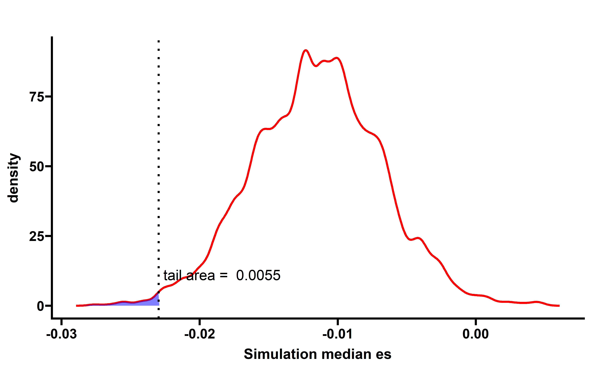
##save
# neo_nes_summ <- neo_nes_summ %>%
# rowwise() %>%
# mutate(p=mean(summ2$median_es[summ2$cancer==cancer] <= median_es))
# saveRDS(neo_nes_summ,file = "neo_nes_summ_ccf_061.rds")
neo_nes3 <- readRDS("../data/neo_nes_ccf06_1_remove_driver_samples.rds")
neo_nes_summ <- readRDS("../data/neo_nes_summ_ccf_061.rds")
p3 <- get_f1(neo_nes3,pancancer_p = 0.006,dt2 = neo_nes_summ,median_es = median(neo_nes3$es))
#> Joining, by = "cancer"
#> Joining, by = "cancer"
p3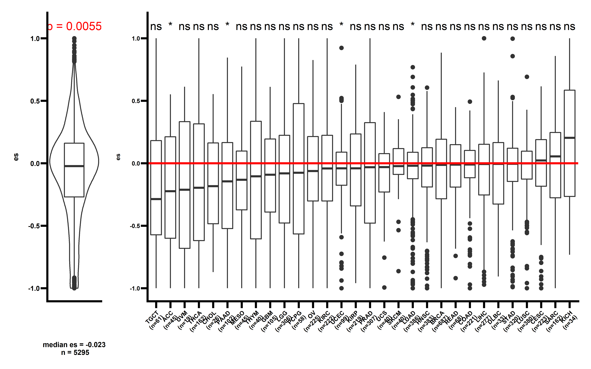
Several cancer types including ACC, CHOL, UCEC, LUAD show significant low ESCCF values. This data demonstrates the existence of immunoediting-elimination signal in TCGA dataset.
We then calculated the EXP-ES and corresponding simulation median ES distribution:
all_mut_exp <- readRDS("../data/all_mut_tpm_not_filter.rds")
all_mut_exp <- all_mut_exp %>% select(sample,tpm_exp,neo) %>% rename(exp=tpm_exp)
all_mut_exp %>%
group_by(sample) %>%
summarise(n_a=sum(neo=="not_neo"),n_c=sum(neo=="neo")) %>%
filter(n_a>=1,n_c>=1) -> summ
neo_exp <- all_mut_exp %>% filter(sample %in% summ$sample) %>%
filter(!(sample %in% summ2$sample))
cal_nes_warp <- function(dt){
results_ccf <- vector("list",length = length(unique(dt$sample)))
names(results_ccf) <- unique(dt$sample)
cl <- makeCluster(getOption("cl.cores", 18),type="FORK")
results_ccf <- parSapply(cl=cl,names(results_ccf),
function(x){
a <- NeoEnrichment::cales_t(data = dt,barcode = x,type = "II",
calp = TRUE,sample_counts = 1000,
cal_type = "exp")
#df <- data.frame(sample=x,es=a)
return(a)
},simplify = FALSE)
stopCluster(cl)
results_ccf <- Filter(function(x){length(x)>1},results_ccf)
pancancer_nes_ccf <- bind_rows(results_ccf)
return(pancancer_nes_ccf)
}
nes_exp <- cal_nes_warp(neo_exp)
saveRDS(nes_exp,file = "../data/nes_exp.rds")sim_all <- readRDS("../../tmp/sim_2000_all_exp.rds")##this file is too large to push to Github
nes_exp <- readRDS("../data/nes_exp.rds")
sim_all %>%
group_by(cancer,sim_num) %>%
summarise(median_es=median(es)) -> summ2
#> `summarise()` has grouped output by 'cancer'. You can override using the `.groups` argument.
nes_exp$cancer <- get_cancer_type(nes_exp$sample)
neo_nes_summ <- nes_exp %>%
group_by(cancer) %>% summarise(median_es=median(es))
#The following code can be used to plot cancer type simulation which showd in FigS6
#res <- vector("list",30)
# for (i in 1:30){
# dt <- sim_all %>% filter(cancer==neo_nes_summ$cancer[i])
# dt_summ <- dt %>%
# group_by(sim_num) %>%
# summarise(median_es=median(es))
# p <- WVPlots::ShadedDensity(frame = dt_summ,
# xvar = "median_es",
# threshold = neo_nes_summ$median_es[i],
# title = neo_nes_summ$cancer[i],
# tail = "left")
# p$layers[[1]]$aes_params$colour <- "red"
# p$layers[[1]]$aes_params$size <- 1
# p$layers[[2]]$aes_params$fill <- "blue" #geom_ribbon
# p$layers[[3]]$aes_params$colour <- "black"
# p$layers[[3]]$aes_params$size <- 1
# p1 <- p + labs(x="Simulation median es")+
# theme_prism()
# res[[i]] <- p1
# }
#
# plot_grid(plotlist = res)
sim_all %>%
group_by(sim_num) %>%
summarise(median_es=median(es)) -> summ
p <- WVPlots::ShadedDensity(frame = summ,
xvar = "median_es",
threshold = median(nes_exp$es),
title = "",
tail = "left")
p$layers[[1]]$aes_params$colour <- "red"
p$layers[[1]]$aes_params$size <- 1
p$layers[[2]]$aes_params$fill <- "blue" #geom_ribbon
p$layers[[3]]$aes_params$colour <- "black"
p$layers[[3]]$aes_params$size <- 1
#p$layers[[4]]$aes_params$label <- "Actual median ES" #geom_text
p1 <- p + labs(x="Simulation median es")+
theme_prism()
p1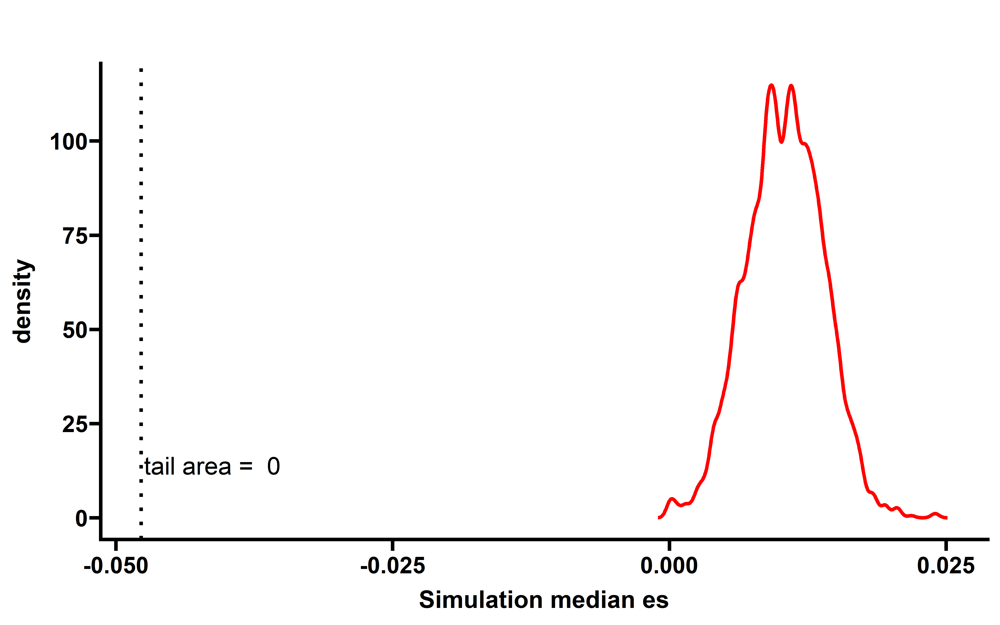
##save
# neo_nes_summ <- neo_nes_summ %>%
# rowwise() %>%
# mutate(p=mean(summ2$median_es[summ2$cancer==cancer] <= median_es))
# saveRDS(neo_nes_summ,file = "neo_nes_summ_exp.rds")
neo_nes_summ <- readRDS("../data/neo_nes_summ_exp.rds")
p3 <- get_f1(nes_exp,pancancer_p = "< 0.0005",dt2 = neo_nes_summ,median_es = median(nes_exp$es))
#> Joining, by = "cancer"
#> Joining, by = "cancer"
p3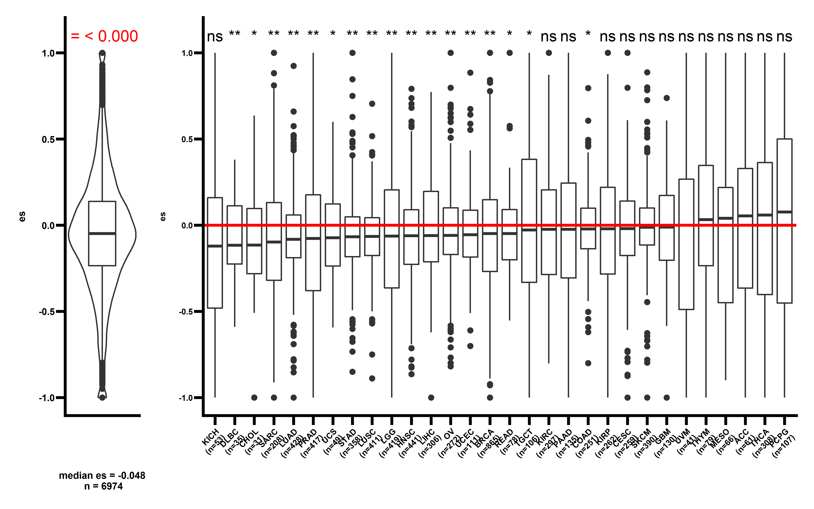
In majority of cancer types (including KICH, DLBC, CHOL, SARC, LUAD, PAAD, UCS, STAD, LGG, LUSC, HNSC, OV, UCEC, BRCA, LIHC, COAD), a significant low ESRNA values are observed . This study demonstrates that the immunoediting escape through down-regulating the expression of neoantigenic alteration is prevalent in human cancer.
When we compared the median cancer type CCF-ES and EXP-ES, we found the significant negative corrlation between this two type ES value:
##these add p data can be calculated by change the parameter of need_p to TRUE
nes_ccf <- readRDS("../data/neo_nes_ccf06_1_remove_driver_samples_addp.rds")
nes_exp <- readRDS("../data/nes_exp_addp.rds")
nes_ccf_exp <- inner_join(
nes_ccf %>% rename(ccf_es=es),
nes_exp %>% rename(exp_es=es)
)
#> Joining, by = "sample"
nes_ccf_exp$cancer <- get_cancer_type(nes_ccf_exp$sample)
nes_ccf_exp %>%
group_by(cancer) %>%
summarise(median_ccf_es=median(ccf_es),
median_exp_es=median(exp_es)) -> summ_ccf_exp
cor.test(summ_ccf_exp$median_ccf_es,summ_ccf_exp$median_exp_es)
#>
#> Pearson's product-moment correlation
#>
#> data: summ_ccf_exp$median_ccf_es and summ_ccf_exp$median_exp_es
#> t = -3.3231, df = 28, p-value = 0.002489
#> alternative hypothesis: true correlation is not equal to 0
#> 95 percent confidence interval:
#> -0.7486576 -0.2122281
#> sample estimates:
#> cor
#> -0.5318337
ggplot(data = summ_ccf_exp,aes(x=median_ccf_es,y=median_exp_es))+
geom_smooth(method = "lm", se=FALSE, color="black", formula = y ~ x) +
geom_point()+
stat_cor(label.y = 0.3,
aes(label = paste(..r.label.., ..p.label.., sep = "~`,`~")),
size=4)+
theme_prism()+
labs(x="Median CCF ES",y="Median EXP ES")
nes_ccf_exp %>%
group_by(cancer) %>%
summarise(per_escape=mean(exp_es<0 & p_value<0.05),
median_es=median(ccf_es)) -> summ
cor.test(summ$per_escape,summ$median_es)
#>
#> Pearson's product-moment correlation
#>
#> data: summ$per_escape and summ$median_es
#> t = 3.6094, df = 28, p-value = 0.001185
#> alternative hypothesis: true correlation is not equal to 0
#> 95 percent confidence interval:
#> 0.2550042 0.7678830
#> sample estimates:
#> cor
#> 0.5635042
ggplot(data = summ,aes(x=median_es,y=per_escape))+
geom_smooth(method = "lm", se=FALSE, color="black", formula = y ~ x) +
geom_point()+
stat_cor(label.y = 0.2,
aes(label = paste(..r.label.., ..p.label.., sep = "~`,`~")),
size=4)+
theme_prism()+
labs(x="Median CCF ES",y="Escape sample percent")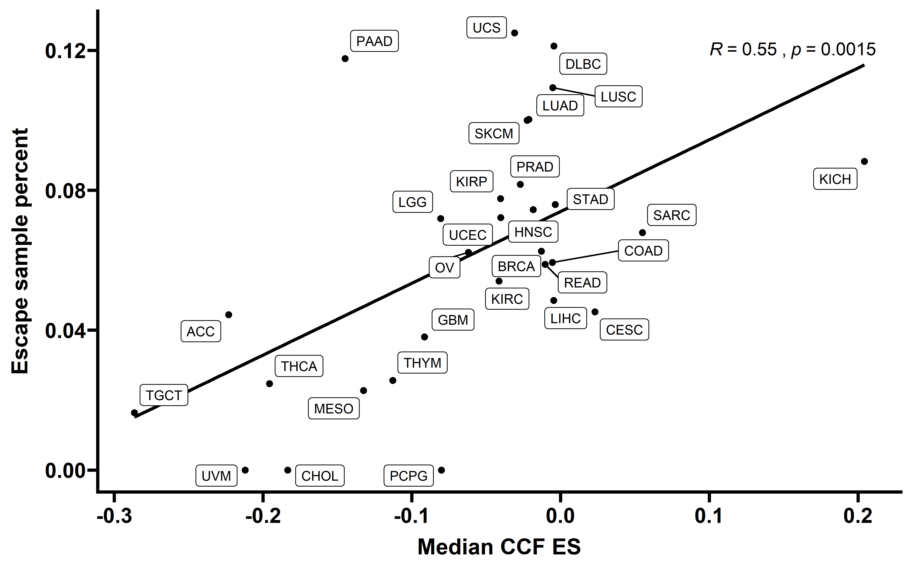
Neoantigen enrichment score and immune negative selection strength quantification
Here we investigate the connections between neoantigen enrichment score (ESCCF) and immune negative selection strength s using a stochastic branching cancer evolution model as previously described (Lakatos et al., 2020). The detail of simulation process was described in the Method part and code can be found in code/julia/simulation.jl.
Mutations harbored in at least 5 cells out of 105 were collected at the end of each simulation and the CCF was calculated. To account for imperfect sequencing measurements, CCF values were computed via a simulated sequencing step introducing noise to these frequencies with the indicated read depth (see method):
cal_ccf <- function(depth){
function(ccf){
map_dbl(ccf,function(x,y){rbinom(1,y,x)/y},depth)
}
}
dep_ccf <- cal_ccf(depth = 200)
files <- list.files("data/merge/")
res <- vector("list",length = 50)
for (i in 1:50){
s <- readRDS(paste0("~/test/data/merge/",files[i]))
s <- s %>%
mutate(mut_neo=ifelse(mut_neo=="false","no","yes")) %>%
rename(neo=mut_neo)
s$ccf_noise <- dep_ccf(s$ccf)
s <- s %>%
filter(ccf_noise>0)
s <- s %>% select(-ccf) %>% rename(ccf=ccf_noise)
tt <- cal_nes_warp(s)##calculate ES
res[[i]] <- tt
print(paste0("complete ",i))
}
nes_sim <- bind_rows(res)
nes_sim <- nes_sim %>%
mutate(selection = substr(sample,3,6))
saveRDS(nes_sim,file = "../data/nes_sim_growth_200_addp.rds")We can plot the distribution of ES of 100 simulated tumors (read depth 200×) across different selection strength and the precent of significant tumors (FDR adjust p value <0.1):
nes_sim <- readRDS("../data/nes_sim_growth_200_addp.rds")
nes_sim$s <- as.numeric(nes_sim$selection)
need_s <- seq(0,0.24,0.02)
nes_sim_s <- nes_sim %>% filter(s %in% need_s)
ggplot(data=nes_sim_s,aes(x=paste0("-",selection),y=es,fill=selection))+
geom_violin()+
theme_prism()+
theme(axis.text.x = element_text(angle = 45,vjust = 1, hjust = 1))+
geom_hline(yintercept=(-0.023),
color = "red", size=1,linetype = "dashed")+
labs(x="Selection",y="ES")+
guides(fill=F)+
stat_summary(fun="median", geom="point",color="yellow",size=1)
nes_sim_s %>%
group_by(selection) %>%
summarise(adj_p=p.adjust(p,method = "fdr"),sig_per=mean(adj_p<0.1)) -> summ
#> `summarise()` has grouped output by 'selection'. You can override using the `.groups` argument.
summ <- summ %>% group_by(selection) %>% summarise(per=unique(sig_per))
ggplot(data=summ,aes(x=selection,y=per*100))+
geom_bar(stat = "identity")+
theme_prism()+
theme(axis.text.x = element_text(angle = 45,vjust = 1, hjust = 1))+
labs(x="Selection",y="Percent of significant samples (%)")
ES-CCF show near linear correlation with s values. This analysis suggests that the quantified ES-CCF can be used to infer the immune selection strength in patient. The median ES-CCF in TCGA datasets is -0.023, suggesting a median immune negative selection strength s=-0.08.
Using this simulated data, we can also compare our method with other method. To compare the power of our method with method used in this study (Lakatos et al., 2020), we used two side K-S test to detect the difference between the VAF distribution of all mutations and neoantigen-associated mutations and reported K-S D statistic and corresponding p value:
files <- list.files("data/merge/")
res <- vector("list",length = 50)
for (i in 1:50){
s <- readRDS(paste0("~/test/data/merge/",files[i]))
s <- s %>%
mutate(mut_neo=ifelse(mut_neo=="false","no","yes")) %>%
rename(neo=mut_neo)
s$ccf_noise <- dep_ccf(s$ccf)
s <- s %>%
filter(ccf_noise>0)
s <- s %>% select(-ccf) %>% rename(ccf=ccf_noise)
results_ccf <- vector("list",length = length(unique(s$sample)))
names(results_ccf) <- unique(s$sample)
cl <- makeCluster(getOption("cl.cores", 20),type="FORK")
results_ccf <- parSapply(cl=cl,names(results_ccf),
function(x){
data <- s %>% filter(sample == x)
neo <- data %>% filter(neo=="yes")
ks_t <- ks.test(neo$ccf,data$ccf)
ttt <- data.frame(D=ks_t$statistic,p=ks_t$p.value,sample=x)
return(ttt)
},simplify = FALSE)
stopCluster(cl)
res_ones <- bind_rows(results_ccf)
res[[i]] <- res_ones
print(paste0("complete ",i))
}
res_ks <- bind_rows(res)
res_ks$selection <- substr(res_ks$sample,3,6)
saveRDS(res_ks,file = "../data/ks_sim_depth200.rds")Plot the distribution of KS D statics of 100 simulated tumors (read depth 200×) across different selection strength and the precent of significant tumors (FDR adjust p value <0.1)
res_ks <- readRDS("../data/ks_sim_depth200.rds")
res_ks$s <- as.numeric(res_ks$selection)
need_s <- seq(0,0.24,0.02)
res_ks_s <- res_ks %>% filter(s %in% need_s)
ggplot(data=res_ks_s,aes(x=paste0("-",selection),y=D,fill=selection))+
geom_violin()+
theme_prism()+
theme(axis.text.x = element_text(angle = 45,vjust = 1, hjust = 1))+
labs(x="Selection",y="K-S statistic")+
guides(fill=F)+
stat_summary(fun="median", geom="point",color="yellow",size=1)res_ks_s %>%
group_by(selection) %>%
summarise(adj_p=p.adjust(p,method = "fdr"),sig_per=mean(adj_p<0.1)) -> summ
#> `summarise()` has grouped output by 'selection'. You can override using the `.groups` argument.
ggplot(data=summ,aes(x=selection,y=sig_per))+
geom_bar(stat = "identity")+
theme_prism()+
theme(axis.text.x = element_text(angle = 45,vjust = 1, hjust = 1))+
labs(x="Selection",y="Percent of significant samples")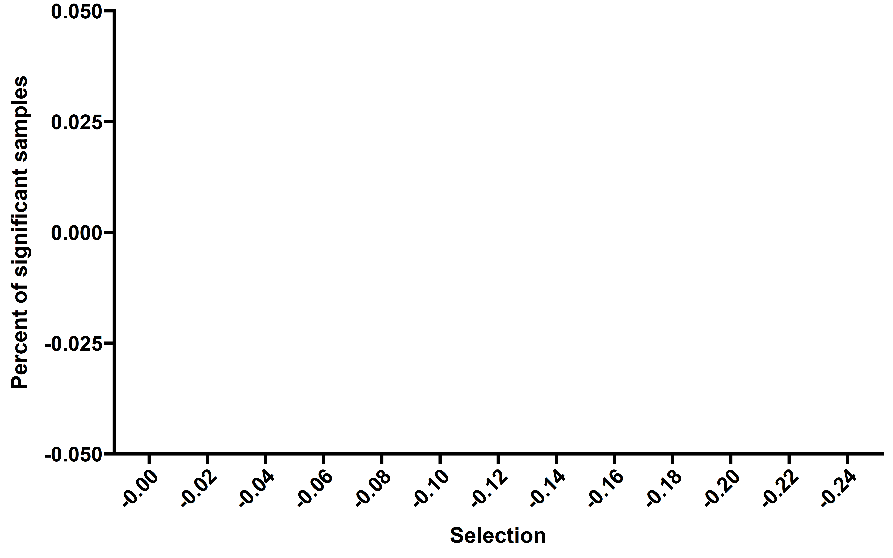 Of note, no tumors show significant signal under the same simulated conditions.
To futher compare the power of methods, in addition to sequencing limitations, we also added different proportions of false positive neoantigen: we randomly sampled nonantigenic mutations of simulated tumors (varied between 5 and 500% of the number of true neoantigen) that were falsely labeled as neoantigen. Then we calculated the number of significant samples in each read depth and proportions of false positive neoantigen combination as the power of method to detect selection strength:
###power analysis
##es
cal_ccf <- function(depth){
function(ccf){
map_dbl(ccf,function(x,y){rbinom(1,y,x)/y},depth)
}
}
neo_per <- c(0,5,20,50,100,200,500)*0.01
depth <- c(50,100,200,500,800,1000,2000,5000,10000)
re <- vector("list",63)
com <- expand.grid(neo_per,depth)
com$lable <- paste(com$Var1,com$Var2,sep = "_")
names(re) <- com$lable
s <- readRDS(paste0("~/test/data/merge/0.24.rds"))
s <- s %>%
mutate(mut_neo=ifelse(mut_neo=="false","no","yes")) %>%
rename(neo=mut_neo) %>%
mutate(mut_sample_id=paste(sample,mut,sep = "-"))
set.seed(20211024)
for (i in neo_per){
for (j in depth){
dep_ccf <- cal_ccf(depth = j)
neo <- s %>% filter(neo =="yes")
neo_summ <- neo %>% group_by(sample) %>% summarise(neo_c=n())
not_neo <- s %>% filter(neo != "yes")
not_neo <- left_join(not_neo,neo_summ)
false_neo <- not_neo %>%
group_by(sample) %>%
summarise(sample_id=sample(mut_sample_id,unique(neo_c)*i,replace = F))
not_neo <- not_neo %>%
mutate(neo = ifelse(mut_sample_id %in% false_neo$sample_id,"yes",neo))
s_new <- rbind(neo,not_neo %>% select(-neo_c))
s_new$ccf_noise <- dep_ccf(s_new$ccf)
s_new <- s_new %>%
filter(ccf_noise>0)
s_new <- s_new %>% select(-ccf) %>% rename(ccf=ccf_noise)
a <- cal_nes_warp(s_new)
re[[paste(i,j,sep = "_")]] <- a
cat(paste0("FP ",i," & depth ",j," complted \n"))
}
}
saveRDS(re,file = "../data/sim_growth_power_alt.rds")
##KS
for (i in neo_per){
for (j in depth){
dep_ccf <- cal_ccf(depth = j)
neo <- s %>% filter(neo =="yes")
neo_summ <- neo %>% group_by(sample) %>% summarise(neo_c=n())
not_neo <- s %>% filter(neo != "yes")
not_neo <- left_join(not_neo,neo_summ)
#false_neo <- sample(not_neo$mut,nrow(neo)*i,replace = F)
false_neo <- not_neo %>%
group_by(sample) %>%
summarise(sample_id=sample(mut_sample_id,unique(neo_c)*i,replace = F))
not_neo <- not_neo %>%
mutate(neo = ifelse(mut_sample_id %in% false_neo$sample_id,"yes",neo))
s_new <- rbind(neo,not_neo %>% select(-neo_c))
s_new$ccf_noise <- dep_ccf(s_new$ccf)
s_new <- s_new %>%
filter(ccf_noise>0)
s_new <- s_new %>% select(-ccf) %>% rename(ccf=ccf_noise)
results_ccf <- vector("list",length = length(unique(s_new$sample)))
names(results_ccf) <- unique(s_new$sample)
cl <- makeCluster(getOption("cl.cores", 20),type="FORK")
results_ccf <- parSapply(cl=cl,names(results_ccf),
function(x){
data <- s_new %>% filter(sample == x)
neo <- data %>% filter(neo=="yes")
ks_t <- ks.test(neo$ccf,data$ccf)
ttt <- data.frame(D=ks_t$statistic,p=ks_t$p.value,sample=x)
return(ttt)
},simplify = FALSE)
stopCluster(cl)
res_ones <- bind_rows(results_ccf)
re[[paste(i,j,sep = "_")]] <- res_ones
cat(paste0("FP ",i," & depth ",j," complted \n"))
}
}
saveRDS(re,file = "../data/sim_growth_power_alt_ks.rds")We used heatmap to display the power:
##es
re <- readRDS("../data/sim_growth_power_alt.rds")
results <- data.frame(neo_depth=names(re),fre=NA)
for (i in 1:nrow(results)){
dt <- re[[i]]
dt$padj <- p.adjust(dt$p,method = "fdr")
print(paste0(names(re)[i]," ",sum(dt$padj < 0.1)))
results$fre[i] <- sum(dt$padj < 0.1)
}
#> [1] "0_50 38"
#> [1] "0.05_50 33"
#> [1] "0.2_50 21"
#> [1] "0.5_50 0"
#> [1] "1_50 7"
#> [1] "2_50 0"
#> [1] "5_50 0"
#> [1] "0_100 83"
#> [1] "0.05_100 73"
#> [1] "0.2_100 63"
#> [1] "0.5_100 44"
#> [1] "1_100 13"
#> [1] "2_100 0"
#> [1] "5_100 4"
#> [1] "0_200 90"
#> [1] "0.05_200 89"
#> [1] "0.2_200 70"
#> [1] "0.5_200 53"
#> [1] "1_200 28"
#> [1] "2_200 12"
#> [1] "5_200 0"
#> [1] "0_500 99"
#> [1] "0.05_500 99"
#> [1] "0.2_500 83"
#> [1] "0.5_500 71"
#> [1] "1_500 51"
#> [1] "2_500 11"
#> [1] "5_500 1"
#> [1] "0_800 98"
#> [1] "0.05_800 97"
#> [1] "0.2_800 92"
#> [1] "0.5_800 79"
#> [1] "1_800 44"
#> [1] "2_800 19"
#> [1] "5_800 1"
#> [1] "0_1000 100"
#> [1] "0.05_1000 99"
#> [1] "0.2_1000 92"
#> [1] "0.5_1000 75"
#> [1] "1_1000 46"
#> [1] "2_1000 34"
#> [1] "5_1000 7"
#> [1] "0_2000 100"
#> [1] "0.05_2000 100"
#> [1] "0.2_2000 97"
#> [1] "0.5_2000 88"
#> [1] "1_2000 70"
#> [1] "2_2000 16"
#> [1] "5_2000 0"
#> [1] "0_5000 100"
#> [1] "0.05_5000 100"
#> [1] "0.2_5000 98"
#> [1] "0.5_5000 95"
#> [1] "1_5000 72"
#> [1] "2_5000 31"
#> [1] "5_5000 7"
#> [1] "0_10000 100"
#> [1] "0.05_10000 100"
#> [1] "0.2_10000 98"
#> [1] "0.5_10000 95"
#> [1] "1_10000 79"
#> [1] "2_10000 48"
#> [1] "5_10000 9"
results <- results %>%
separate(col = neo_depth,into = c("neo_per","depth"),sep = "_")
results %>%
mutate(depth=paste0("depth",depth)) %>%
pivot_wider(names_from = depth,values_from = fre) %>% as.data.frame() -> mat
rownames(mat) <- mat$neo_per
mat <- mat %>% select(-neo_per)
cols <-c("#551A8B", "#8B3A62", "#FFFF00")
colnames(mat) <- gsub("depth","",colnames(mat))
rownames(mat) <- as.character(100*as.numeric(rownames(mat)))
Heatmap(mat,cluster_columns = F,cluster_rows = F,row_names_side = "left",
name = "Power(%)",col = cols,
row_title = "Ratio of false positive \n neoantigens added (%)",
column_title = "Read depth",column_names_rot = 0,column_title_side = "bottom")
#> Warning: The input is a data frame, convert it to the matrix.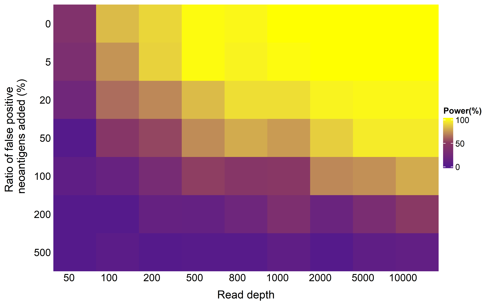
##ks
re <- readRDS("../data/sim_growth_power_alt_ks.rds")
results <- data.frame(neo_depth=names(re),fre=NA)
for (i in 1:nrow(results)){
dt <- re[[i]]
dt$padj <- p.adjust(dt$p,method = "fdr")
print(paste0(names(re)[i]," ",sum(dt$padj < 0.1)))
results$fre[i] <- sum(dt$padj < 0.1)
}
#> [1] "0_50 0"
#> [1] "0.05_50 0"
#> [1] "0.2_50 0"
#> [1] "0.5_50 0"
#> [1] "1_50 0"
#> [1] "2_50 0"
#> [1] "5_50 0"
#> [1] "0_100 0"
#> [1] "0.05_100 0"
#> [1] "0.2_100 0"
#> [1] "0.5_100 0"
#> [1] "1_100 0"
#> [1] "2_100 0"
#> [1] "5_100 0"
#> [1] "0_200 0"
#> [1] "0.05_200 0"
#> [1] "0.2_200 0"
#> [1] "0.5_200 0"
#> [1] "1_200 0"
#> [1] "2_200 0"
#> [1] "5_200 0"
#> [1] "0_500 66"
#> [1] "0.05_500 62"
#> [1] "0.2_500 30"
#> [1] "0.5_500 16"
#> [1] "1_500 1"
#> [1] "2_500 0"
#> [1] "5_500 0"
#> [1] "0_800 95"
#> [1] "0.05_800 85"
#> [1] "0.2_800 68"
#> [1] "0.5_800 47"
#> [1] "1_800 13"
#> [1] "2_800 0"
#> [1] "5_800 0"
#> [1] "0_1000 97"
#> [1] "0.05_1000 97"
#> [1] "0.2_1000 95"
#> [1] "0.5_1000 55"
#> [1] "1_1000 19"
#> [1] "2_1000 0"
#> [1] "5_1000 0"
#> [1] "0_2000 100"
#> [1] "0.05_2000 100"
#> [1] "0.2_2000 99"
#> [1] "0.5_2000 96"
#> [1] "1_2000 73"
#> [1] "2_2000 0"
#> [1] "5_2000 0"
#> [1] "0_5000 100"
#> [1] "0.05_5000 100"
#> [1] "0.2_5000 100"
#> [1] "0.5_5000 100"
#> [1] "1_5000 98"
#> [1] "2_5000 65"
#> [1] "5_5000 0"
#> [1] "0_10000 100"
#> [1] "0.05_10000 100"
#> [1] "0.2_10000 100"
#> [1] "0.5_10000 100"
#> [1] "1_10000 100"
#> [1] "2_10000 96"
#> [1] "5_10000 0"
results <- results %>%
separate(col = neo_depth,into = c("neo_per","depth"),sep = "_")
results %>%
mutate(depth=paste0("depth",depth)) %>%
pivot_wider(names_from = depth,values_from = fre) %>% as.data.frame() -> mat
rownames(mat) <- mat$neo_per
mat <- mat %>% select(-neo_per)
cols <-c("#551A8B", "#8B3A62", "#FFFF00")
colnames(mat) <- gsub("depth","",colnames(mat))
rownames(mat) <- as.character(100*as.numeric(rownames(mat)))
Heatmap(mat,cluster_columns = F,cluster_rows = F,row_names_side = "left",
name = "Power(%)",col = cols,
row_title = "Ratio of false positive \n neoantigens added (%)",
column_title = "Read depth",column_names_rot = 0,column_title_side = "bottom")
#> Warning: The input is a data frame, convert it to the matrix.Pan-cancer features and correlations of immunoediting signal
Then we compared the immune cell infiltration level between tumors with detectable immunoediting-elimination signal (ESCCF<0, P<0.05) or immunoediting-escape signal (ESRNA<0, P<0.05) and other samples:
pancancer_subtcells <- readRDS("../data/pancancer_subtcells.rds")
nes_ccf <- readRDS("../data/neo_nes_ccf06_1_remove_driver_samples_addp.rds")
nes_exp <- readRDS("../data/nes_exp_addp.rds")
ccf_immune <- left_join(
nes_ccf,
pancancer_subtcells
) %>%
mutate(es_type=ifelse(es<0 & p <0.05,"yes","no"))
#> Joining, by = "sample"
exp_immune <- left_join(
nes_exp ,
pancancer_subtcells
) %>%
mutate(es_type=ifelse(es<0 & p_value <0.05,"yes","no"))
#> Joining, by = "sample"
p1 <- ggplot(data=ccf_immune,aes(x=es_type,y=CD8_T+NK))+
geom_boxplot()+
stat_compare_means()+
theme_prism()+
labs(x="Elimination",y="CD8 T + NK")
p2 <- ggplot(data=ccf_immune,aes(x=es_type,y=iTreg+nTreg))+
geom_boxplot()+
stat_compare_means()+
theme_prism()+
labs(x="Elimination",y="iTreg + nTreg")
p1 + p2
#> Warning: Removed 70 rows containing non-finite values (stat_boxplot).
#> Warning: Removed 70 rows containing non-finite values (stat_compare_means).
#> Warning: Removed 70 rows containing non-finite values (stat_boxplot).
#> Warning: Removed 70 rows containing non-finite values (stat_compare_means).
p3 <- ggplot(data=exp_immune,aes(x=es_type,y=CD8_T+NK))+
geom_boxplot()+
stat_compare_means()+
theme_prism()+
labs(x="Escape",y="CD8 T + NK")
p4 <- ggplot(data=exp_immune,aes(x=es_type,y=iTreg+nTreg))+
geom_boxplot()+
stat_compare_means()+
theme_prism()+
labs(x="Escape",y="iTreg + nTreg")
p3 + p4
#> Warning: Removed 93 rows containing non-finite values (stat_boxplot).
#> Warning: Removed 93 rows containing non-finite values (stat_compare_means).
#> Warning: Removed 93 rows containing non-finite values (stat_boxplot).
#> Warning: Removed 93 rows containing non-finite values (stat_compare_means).In tumors with detectable immunoediting-elimination signal, a slightly increased CD8+ T cell infiltration status compared with the remaining samples were observed, but the difference does not reach statistical significance (P=0.2). This data suggests that historically happened immunoediting-elimination process may not be reflected in the current immune cell infiltration status.
The immunoediting-escape signal quantified as ES-RNA also do not show statistically significant difference between samples with detectable immunoediting-escape signal and the remaining samples in CD8+ T cell infiltration. However we observe a significant up-regulated regulatory T cell (Treg) percentage in samples with detectable immunoediting-escape signal, and up-regulated Treg has been reported to stimulate tumor immune escape.
Immunotherapy dataset analysis
Quantified immunoediting-elimination signal predicts the clinical response of cancer immunotherapy
To investigate the predictive performance of the quantified immunoediting-elimination signal (ESCCF) in ICI response prediction for individual patient, we searched for public ICI datasets with raw WES data and RNA-seq data available, and three melanoma ICI datasets have been identified. Then we calculated the immunoediting-elimination signal (ES-CCF) for each patient:
all_mut_ccf_ici <- readRDS("../data/Immunotherapy/all_mut_ccf_ici.rds")
all_mut_ccf_ici <- all_mut_ccf_ici %>%
rename(ccf=cancer_cell_frac) %>%
mutate(neo=ifelse(neo=="neo","yes","no"))
samples_has_subclonal <- all_mut_ccf_ici %>% filter(ccf<0.6) %>% select(sample) %>%
distinct(sample)
all_mut_ccf_ici %>% filter(sample %in% samples_has_subclonal$sample) %>%
group_by(sample) %>%
summarise(c_n=sum(neo=="yes"),c_m=sum(neo=="no")) %>% filter(c_n>=1 & c_m >=1) -> summ
neo_missense <- all_mut_ccf_ici %>% filter(sample %in% summ$sample)
cal_nes_warp <- function(dt){
results_ccf <- vector("list",length = length(unique(dt$sample)))
names(results_ccf) <- unique(dt$sample)
cl <- makeCluster(getOption("cl.cores", 18),type="FORK")
results_ccf <- parSapply(cl=cl,names(results_ccf),
function(x){
data <- dt %>% filter(sample == x)
a <- NeoEnrichment::cal_nes_new_test(dt = data,
sample_counts = 1000,
need_p = FALSE)
return(a)
},simplify = FALSE)
stopCluster(cl)
results_ccf <- Filter(function(x){length(x)>1},results_ccf)
pancancer_nes_ccf <- bind_rows(results_ccf)
return(pancancer_nes_ccf)
}
neo_missense <- neo_missense %>% select(sample,neo,ccf) %>% filter(!is.na(ccf))
neo_nes <- cal_nes_warp(neo_missense)
neo_nes$es <- round(neo_nes$es,digits = 3)
saveRDS(neo_nes,file = "../data/Immunotherapy/nes_immunetherapy.rds")In univariate Cox proportional hazards regression analysis, quantified ESCCF value is significantly associated with cancer patients’ survival (p=0.03), and low ESCCF value (suggest the presence of high immunoediting-elimination signal) is associated with improved ICI clinical response (Hazard ratio (HR)=3.74, 95%CI=1.11-12.6) :
all_clinical <- readRDS("../data/Immunotherapy/all_clinical.rds")
neo_nes <- readRDS("../data/Immunotherapy/nes_immunetherapy.rds")
neo_nes <- left_join(neo_nes,all_clinical,by="sample")
neo_nes <- neo_nes %>% filter(!is.na(response2))
##cox analysis
p1 <- show_forest(neo_nes,covariates = "es",time = "OS.time",status = "OS")
#> => Processing variable es
#> ==> Building Surv object...
#> ==> Building Cox model...
#> ==> Done.
#> Resized limits to included dashed line in forest panel
p1Patients are divided into three groups based on ES-CCF value cutoff determined by surv_cutpoint function, patients with lowest ES-CCF values (indicate the presence of immunoediting-elimination signal) show the best survival after ICI:
all_mut_ccf_ici <- readRDS("../data/Immunotherapy/all_mut_ccf_ici.rds")
all_mut_ccf_ici <- all_mut_ccf_ici %>%
rename(ccf=cancer_cell_frac) %>%
mutate(neo=ifelse(neo=="neo","yes","no"))
surv_cutpoint(neo_nes,"OS.time","OS","es")
#> cutpoint statistic
#> es -0.222 2.443914
neo_nes <- neo_nes %>%
mutate(es_type = case_when(
es <= (-0.222) ~ "low",
es > (-0.222) ~ "high"
))
low <- neo_nes %>% filter(es_type=="low")
high <- neo_nes %>% filter(es_type=="high")
all_clinical <- all_clinical %>%
filter(sample %in% all_mut_ccf_ici$sample) %>%
mutate(type=case_when(
sample %in% low$sample ~ "low",
sample %in% high$sample ~ "high",
TRUE ~ "others"
))
p3 <- show_km(all_clinical,"type")
#> Warning: Vectorized input to `element_text()` is not officially supported.
#> Results may be unexpected or may change in future versions of ggplot2.
p3we use logistic regression to compare the efficiency of ESCCF, TMB and neoantigenic mutation count in predicting immunotherapy clinical response. Relationship between prognosis (patients with clinical response or without clinical response) and ESCCF, TMB and neoantigenic mutation count was analyzed. The goodness of fit was performed by Hosmer–Lemeshow test (H-L test):
neo_nes <- neo_nes %>%
mutate(obj=ifelse(response2=="response",1,0))
model <- glm(obj ~ es, data = neo_nes, family = "binomial")
summary(model)
#>
#> Call:
#> glm(formula = obj ~ es, family = "binomial", data = neo_nes)
#>
#> Deviance Residuals:
#> Min 1Q Median 3Q Max
#> -1.1562 -0.8402 -0.7737 1.4243 1.7095
#>
#> Coefficients:
#> Estimate Std. Error z value Pr(>|z|)
#> (Intercept) -0.8676 0.2247 -3.862 0.000113 ***
#> es -1.1293 0.9067 -1.246 0.212942
#> ---
#> Signif. codes: 0 '***' 0.001 '**' 0.01 '*' 0.05 '.' 0.1 ' ' 1
#>
#> (Dispersion parameter for binomial family taken to be 1)
#>
#> Null deviance: 118.34 on 96 degrees of freedom
#> Residual deviance: 116.79 on 95 degrees of freedom
#> AIC: 120.79
#>
#> Number of Fisher Scoring iterations: 4
performance::performance_hosmer(model)
#> # Hosmer-Lemeshow Goodness-of-Fit Test
#>
#> Chi-squared: 4.874
#> df: 8
#> p-value: 0.771
#> Summary: model seems to fit well.
all_mut_ccf_ici %>%
group_by(sample) %>%
summarise(tmb=n()/38,nb=sum(neo=="yes")/38) -> tmb_nb
neo_nes <- left_join(neo_nes,tmb_nb)
#> Joining, by = "sample"
model2 <- glm(obj ~ tmb, data = neo_nes, family = "binomial")
summary(model2)
#>
#> Call:
#> glm(formula = obj ~ tmb, family = "binomial", data = neo_nes)
#>
#> Deviance Residuals:
#> Min 1Q Median 3Q Max
#> -1.5311 -0.7640 -0.7319 1.3947 1.7305
#>
#> Coefficients:
#> Estimate Std. Error z value Pr(>|z|)
#> (Intercept) -1.30753 0.29590 -4.419 9.92e-06 ***
#> tmb 0.06035 0.02584 2.335 0.0195 *
#> ---
#> Signif. codes: 0 '***' 0.001 '**' 0.01 '*' 0.05 '.' 0.1 ' ' 1
#>
#> (Dispersion parameter for binomial family taken to be 1)
#>
#> Null deviance: 118.34 on 96 degrees of freedom
#> Residual deviance: 110.98 on 95 degrees of freedom
#> AIC: 114.98
#>
#> Number of Fisher Scoring iterations: 4
performance::performance_hosmer(model2)
#> # Hosmer-Lemeshow Goodness-of-Fit Test
#>
#> Chi-squared: 15.447
#> df: 8
#> p-value: 0.051
#> Summary: model seems to fit well.
model3 <- glm(obj ~ nb, data = neo_nes, family = "binomial")
summary(model3)
#>
#> Call:
#> glm(formula = obj ~ nb, family = "binomial", data = neo_nes)
#>
#> Deviance Residuals:
#> Min 1Q Median 3Q Max
#> -1.5523 -0.7890 -0.7279 1.1717 1.7284
#>
#> Coefficients:
#> Estimate Std. Error z value Pr(>|z|)
#> (Intercept) -1.2858 0.3006 -4.278 1.89e-05 ***
#> nb 0.8816 0.4001 2.203 0.0276 *
#> ---
#> Signif. codes: 0 '***' 0.001 '**' 0.01 '*' 0.05 '.' 0.1 ' ' 1
#>
#> (Dispersion parameter for binomial family taken to be 1)
#>
#> Null deviance: 118.34 on 96 degrees of freedom
#> Residual deviance: 112.47 on 95 degrees of freedom
#> AIC: 116.47
#>
#> Number of Fisher Scoring iterations: 4
performance::performance_hosmer(model3)
#> # Hosmer-Lemeshow Goodness-of-Fit Test
#>
#> Chi-squared: 9.389
#> df: 8
#> p-value: 0.311
#> Summary: model seems to fit well.
p4 <- ggplot(neo_nes, aes(x=es, y=obj)) +
geom_point(alpha=.5) +
stat_smooth(method="glm", se=FALSE, fullrange=TRUE,
method.args = list(family=binomial),color="red")+
theme_bw()+
theme(axis.title.y = element_blank())+
labs(x="ES",title = "H-L test P value = 0.771")
p5 <- ggplot(neo_nes, aes(x=tmb, y=obj)) +
geom_point(alpha=.5) +
stat_smooth(method="glm", se=FALSE, fullrange=TRUE,
method.args = list(family=binomial),color="red")+
theme_bw()+
theme(axis.title.y = element_blank())+
labs(x="TMB",title = "H-L test P value = 0.051")
p6 <- ggplot(neo_nes, aes(x=nb, y=obj)) +
geom_point(alpha=.5) +
stat_smooth(method="glm", se=FALSE, fullrange=TRUE,
method.args = list(family=binomial),color="red")+
theme_bw()+
theme(axis.title.y = element_blank())+
labs(x="Neoantigen burden",title = "H-L test P value = 0.311")
p7 <- p4 + p5 + p6
p7
#> `geom_smooth()` using formula 'y ~ x'
#> `geom_smooth()` using formula 'y ~ x'
#> `geom_smooth()` using formula 'y ~ x'The H-L test P-value of TMB is 0.051, close to 0.05, implicate the difference between prediction and expectation is close to significant. The H-L test P-value of ESCCF is 0.771 , higher than the H-L test P-value of TMB and neoantigen count, suggesting ESCCF is more suitable for predicting prognosis of patients than TMB and neoantigen count.
Supplementary analyses
Number of the patient with CCF information and number of patient with at least one neoantigenic mutation and subclonal mutation (CCF<0.6) are shown for each cancer type and number of the patient with mRNA expression information and number of patient with at least one neoantigenic mutation and accompanied mRNA expression information are shown for each cancer type:
###sample statistics
all_mut_ccf <- readRDS("../data/all_mut_ccf_tpm.rds")
all_mut_ccf <- all_mut_ccf %>%
rename(ccf=ccf_hat) %>%
mutate(neo=ifelse(neo=="neo","yes","no"))
samples_has_subclonal <- all_mut_ccf %>% filter(ccf<0.6) %>% select(sample) %>%
distinct(sample)
all_mut_ccf %>%
group_by(sample) %>%
summarise(c_n=sum(neo=="yes"),c_m=sum(neo=="no")) %>%
mutate(type=ifelse(sample %in% samples_has_subclonal$sample,"yes","no")) -> sample_summ
sample_summ$cancer <- get_cancer_type(sample_summ$sample)
sample_summ %>%
group_by(cancer) %>%
summarise(sample_counts=n(),
sample_with_neoantigen_counts=sum(c_n>=1 & c_m >=1 & type=="yes")) -> cancer_summ
cancer_summ <- cancer_summ %>% arrange(sample_counts)
cancer_summ$cancer <- factor(cancer_summ$cancer,levels = cancer_summ$cancer)
cancer_summ %>%
dplyr::rename(`All samples`=sample_counts,
`Samples with >= 1 neoantigen and have subclonal mutations`=sample_with_neoantigen_counts) %>%
pivot_longer(cols = c("All samples","Samples with >= 1 neoantigen and have subclonal mutations"),
names_to="type",
values_to="counts") -> cancer_summ_longer
p1 <- pyramid_chart(data = cancer_summ_longer, x = cancer, y = counts, group = type)
#> Warning: `expand_scale()` is deprecated; use `expansion()` instead.
#> Warning: `expand_scale()` is deprecated; use `expansion()` instead.
#> Warning: `expand_scale()` is deprecated; use `expansion()` instead.
#> Warning: `expand_scale()` is deprecated; use `expansion()` instead.
all_mut_exp <- readRDS("../data/all_mut_tpm_not_filter.rds")
all_mut_exp %>%
group_by(sample) %>%
summarise(n_a=sum(neo=="not_neo"),n_c=sum(neo=="neo")) -> sample_summ
sample_summ$cancer <- get_cancer_type(sample_summ$sample)
sample_summ %>%
group_by(cancer) %>%
summarise(sample_counts=n(),
sample_with_neoantigen_counts=sum(n_a>=1 & n_c >=1)) -> cancer_summ
cancer_summ <- cancer_summ %>% arrange(sample_counts)
cancer_summ$cancer <- factor(cancer_summ$cancer,levels = cancer_summ$cancer)
cancer_summ %>%
dplyr::rename(`All samples`=sample_counts,
`Samples with >= 1 neoantigen`=sample_with_neoantigen_counts) %>%
pivot_longer(cols = c("All samples","Samples with >= 1 neoantigen"),
names_to="type",
values_to="counts") -> cancer_summ_longer
p2 <- pyramid_chart(data = cancer_summ_longer, x = cancer, y = counts, group = type)
#> Warning: `expand_scale()` is deprecated; use `expansion()` instead.
#> Warning: `expand_scale()` is deprecated; use `expansion()` instead.
#> Warning: `expand_scale()` is deprecated; use `expansion()` instead.
#> Warning: `expand_scale()` is deprecated; use `expansion()` instead.
p1 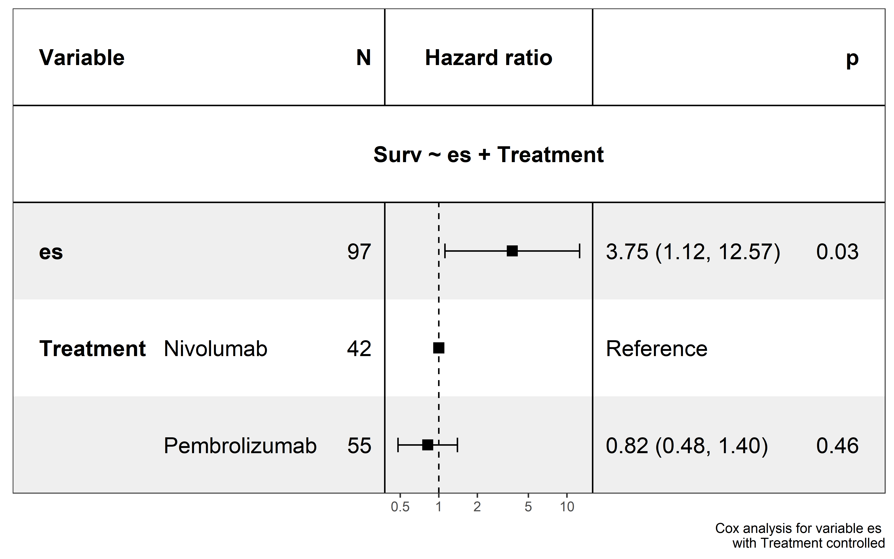
p2We also calculated the significant sample in each cancer type:
pancancer_ccf <- readRDS("../data/neo_nes_ccf06_1_remove_driver_samples_addp.rds") %>%
mutate(es_type=ifelse(es<0 & p <0.05,"sig_neg","others"))
pancancer_exp <- readRDS("../data/nes_exp_addp.rds") %>%
mutate(es_type=ifelse(es<0 & p_value <0.05,"sig_neg","others"))
pancancer_ccf$cancer <- get_cancer_type(pancancer_ccf$sample)
pancancer_exp$cancer <- get_cancer_type(pancancer_exp$sample)
get_plot <- function(dt,total_sig_sample){
sig <- dt %>%
filter(es_type=="sig_neg") %>%
dplyr::group_by(cancer) %>%
summarise(counts=n()) %>%
arrange(counts) %>%
mutate(cancer=factor(cancer,levels = cancer)) %>%
mutate(`Sample proportion`= counts/total_sig_sample) %>%
mutate(label=paste("frac(",counts,",",total_sig_sample,")",sep = ""))
p1 <- ggplot(data=sig,aes(x=cancer,y=`Sample proportion`))+
geom_bar(mapping = aes(x=cancer,y=`Sample proportion`),stat = "identity")+
theme_classic()+
theme(axis.text.x = element_text(angle = 45, vjust = 1, hjust = 1))+
scale_y_continuous(expand = expansion(mult = c(0, .1)))+##remove blank in the bottom
theme(axis.title.x=element_blank())+
geom_text(aes(label=label), position=position_dodge(width=0.9), vjust=-0.25,size=2,parse=TRUE)
return(p1)
}
get_plot(pancancer_ccf,sum(pancancer_ccf$es_type=="sig_neg"))get_plot(pancancer_exp,sum(pancancer_exp$es_type=="sig_neg"))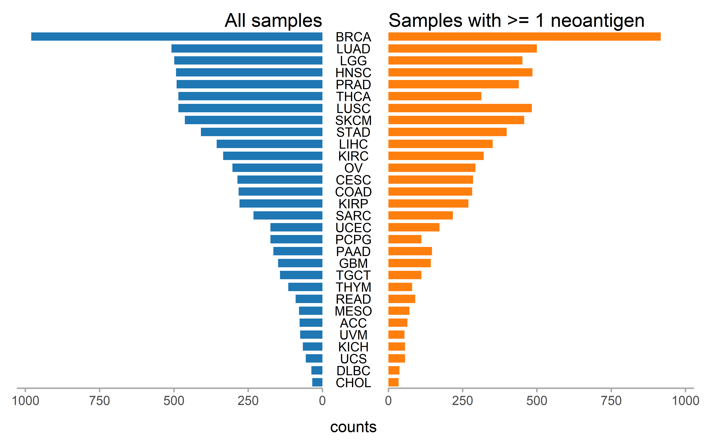
Pan-cancer sample distribution in pie plot:
pancancer_ccf <- pancancer_ccf %>%
mutate(es_type2=ifelse(es<0 & p<0.05,"ES < 0 & P < 0.05","Others"))
pancancer_exp <- pancancer_exp %>%
mutate(es_type2=ifelse(es<0 & p_value<0.05,"ES < 0 & P < 0.05","Others"))
ccf_es <- pancancer_ccf$es
ccf_es1 <- pancancer_ccf$es_type2
par(mfrow=c(4,1))
op <- par(mar = rep(0, 4))
plot_pie(ccf_es,expression = "ccf_es<0",c("ES (CCF) < 0","ES (CCF) >= 0"))
#> NULL
plot_pie(ccf_es1,expression = "ccf_es1=='ES < 0 & P < 0.05'",c("ES (CCF) < 0 & P < 0.05","Others"))
#> NULL
exp_es <- pancancer_exp$es
exp_es1 <- pancancer_exp$es_type2
plot_pie(exp_es,expression = "exp_es<0",c("ES (EXP) < 0","ES (EXP) >= 0"))
#> NULL
plot_pie(exp_es1,expression = "exp_es1=='ES < 0 & P < 0.05'",c("ES (EXP) < 0 & P < 0.05","Others"))
#> NULLThe immune-thearpy dataset sample distribution and clinical parameters:
all_sample_exp_ccf <- readRDS("../data/Immunotherapy/all_mut_ccf_ici.rds")
ccf <- all_sample_exp_ccf %>% filter(!is.na(cancer_cell_frac))
exp <- all_sample_exp_ccf %>% filter(!is.na(exp))
all_sample <- union(names(table(ccf$sample)),names(table(exp$sample)))
both <- intersect(names(table(ccf$sample)),names(table(exp$sample)))
WES <- setdiff(names(table(ccf$sample)),names(table(exp$sample)))
RNA <- setdiff(names(table(exp$sample)),names(table(ccf$sample)))
all_clinical <- readRDS("../data/Immunotherapy/all_clinical.rds")
response <- all_clinical %>% filter(response2=="response")
no_response <- all_clinical %>% filter(response2!="response")
willy_tre <- read_csv("../data/Immunotherapy/willy_clinical.csv") %>%
select(`Patient ID`,Treatment,Gender,Age) %>%
rename(sample=`Patient ID`) %>% mutate(sample=paste("willy_",sample,sep = "")) %>% na.omit()
##nadeem Nivolumab
nadeem_tre <- data.frame(sample=all_sample[grepl("nadeem_",all_sample)],Treatment="Nivolumab",
Gender=NA,Age=NA,stringsAsFactors = F)
liu_clinical <- readRDS("../data/Immunotherapy/liu_clinical.rds") %>%
select(X,Tx,`gender..Male.1..Female.0.`) %>%
mutate(Gender=ifelse(`gender..Male.1..Female.0.`==1,"M","F")) %>%
select(-`gender..Male.1..Female.0.`) %>% mutate(Age=NA) %>%
rename(sample=X,Treatment=Tx) %>% mutate(sample=paste0("liu_",sample)) %>% filter(grepl("_Patient",sample))
all_tre <- bind_rows(list(willy_tre,nadeem_tre,liu_clinical))
dt <- data.frame(sample=all_sample,
stringsAsFactors = F) %>%
mutate(`Data type`= case_when(
sample %in% both ~ "Both",
sample %in% WES ~ "WES",
sample %in% RNA ~ "RNA-Seq"
)) %>%
mutate(Response=ifelse(sample %in% response$sample,"Responder","Non-Responder")) %>%
mutate(cohort=gsub("_.*","",sample)) %>%
left_join(.,all_tre,by="sample")
dt <- dt %>% arrange(sample)
dt_cli <- left_join(dt,all_clinical,by="sample")
cohort_col <- RColorBrewer::brewer.pal(3,"Accent")
data_type_col <- RColorBrewer::brewer.pal(3,"Dark2")
Response_col <- RColorBrewer::brewer.pal(3,"Set1")[1:2]
Treatment_col <- RColorBrewer::brewer.pal(3,"Paired")
ha = HeatmapAnnotation(
Cohort=dt$cohort,
`Data type` = dt$`Data type`,
Response = dt$Response,
Treatment=dt$Treatment,
col = list(Cohort=c("liu"=cohort_col[1],"nadeem"=cohort_col[2],"willy"=cohort_col[3]),
`Data type` = c("WES" =data_type_col[1], "RNA-Seq" = data_type_col[2],"Both"=data_type_col[3]),
Response = c("Responder"=Response_col[1],"Non-Responder"=Response_col[2]),
Treatment=c("Nivolumab"=Treatment_col[1],"Pembrolizumab"=Treatment_col[2])),
annotation_name_side="left",height = unit(300, "cm"),width = unit(20, "cm")
)
lgd1 = Legend(labels = c("liu","nadeem","willy"), legend_gp = gpar(fill=c(cohort_col[1],cohort_col[2],cohort_col[3])),
title = "Cohort", ncol = 3)
lgd2 = Legend(labels = c("WES","RNA-Seq","Both"), legend_gp = gpar(fill=c(data_type_col[1],data_type_col[2],data_type_col[3])),
title = "Data type", ncol = 3)
lgd3 = Legend(labels = c("Responder","Non-Responder"), legend_gp = gpar(fill=c(Response_col[1],Response_col[2])),
title = "Response", ncol = 2)
lgd4 = Legend(labels = c("Nivolumab","Pembrolizumab"), legend_gp = gpar(fill=c(Treatment_col[1],Treatment_col[2],Treatment_col[3])),
title = "Treatment", ncol = 2)
draw(ha, test = T)
pd = packLegend(lgd1, lgd2,lgd3,lgd4)
draw(pd,x = unit(14, "cm"), y = unit(6, "cm"), just = c("left", "bottom"))
knitr::include_graphics("sample_statistics.png")
all_sample_exp_ccf <- left_join(all_sample_exp_ccf,dt_cli,by="sample")
all_sample_exp_ccf %>% group_by(sample) %>% summarise(TMB=log((n()/38)+1)) %>%
left_join(.,dt_cli,by="sample") %>% filter(!is.na(cohort)) -> all_tmb
all_tmb %>% group_by(cohort) %>% summarise(tmb_median=median(TMB),tmb_min=min(TMB),max_tmb=max(TMB))
all_sample_exp_ccf %>% filter(!is.na(cohort)) %>%
group_by(sample) %>% summarise(neo_counts=sum(neo=="neo")) %>%
left_join(.,dt_cli,by="sample")-> all_neo
all_neo %>% group_by(cohort) %>% summarise(median_neo=median(neo_counts))
########表格####
gt_input <- tibble(
cohort=c("Liu et.al \n (2019)","Hogo et.al \n (2016)","Riaz et.al \n (2017)"),
`Tumor type`=c("melanoma","melanoma","melanoma"),
Treatment=c("monotherapy","monotherapy","monotherapy"),
Strategy=c("WES RNA-seq","WES RNA-seq","WES RNA-seq"),
Patients=c(130,37,56),
`Number of men(%)`=c("77(59.2%)","26(70.3%)",NA),
`Number of women(%)`=c("53(40.8%)","11(29.7%)",NA),
`Median age, years`=c(NA,61,NA),
`Median survial time(OS,month)`=c(19.4,18.3,17.4),
`TMB median`=c(1.42,2.49,1.86),
`Neoantigen counts median`=c(28.5,77,52)
)
gt_tbl <- gt(data = gt_input)
gt_input %>%
gt(rowname_col = "cohort") %>%
cols_align(
align = "center"
) -> gt_tbl
gridExtra::grid.table(gt_input)
knitr::include_graphics("sample_table.png")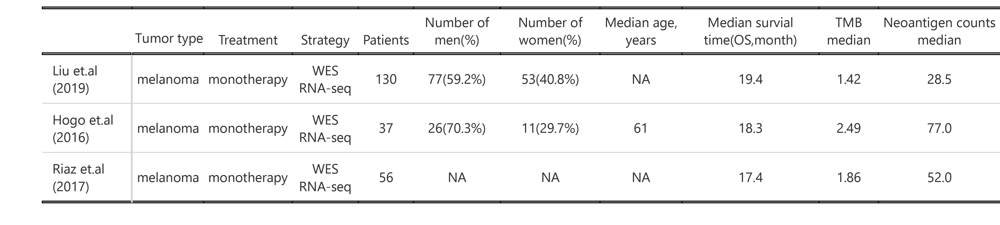
#####oncoprint############
##liu
liu_mutations <- readRDS("../data/Immunotherapy/liu_mutations.rds")
liu_mutations <- liu_mutations %>% mutate(change=str_extract(cDNA_Change,"[A-Z]>[A-Z]")) %>%
mutate(Tumor_Seq_Allele2=gsub(">","",str_extract(change,">[A-Z]"))) %>%
mutate(Reference_Allele=gsub(">","",str_extract(change,"[A-Z]>"))) %>%
rename(Tumor_Sample_Barcode=Patient)
liu_clinical <- readRDS("../data/Immunotherapy/liu_clinical.rds") %>%
filter(grepl("Patient",X)) %>%
select(X,OS,dead) %>%
rename(Tumor_Sample_Barcode=X,Overall_Survival_time=OS,Overall_Survival_Status=dead)
liu <- read.maf(maf = liu_mutations,
clinicalData = liu_clinical,
verbose = FALSE)
oncoplot(maf = liu,top=10,draw_titv = TRUE)
#> Warning in titv(maf = maf, useSyn = TRUE, plot = FALSE): Non standard Ti/Tv
#> class: 1540TRUE
##willy
files <- as.list(paste0("../data/Immunotherapy/willy/",dir("../data/Immunotherapy/willy/")))
willy_maf <- merge_mafs(files)
#> Merging 38 MAF files
#> -Validating
#> --Removed 1 duplicated variants
#> -Silent variants: 225812
#> -Summarizing
#> --Possible FLAGS among top ten genes:
#> TTN
#> MUC16
#> FLG
#> -Processing clinical data
#> --Missing clinical data
#> -Finished in 5.090s elapsed (3.860s cpu)
oncoplot(maf = willy_maf,top=10,draw_titv = TRUE)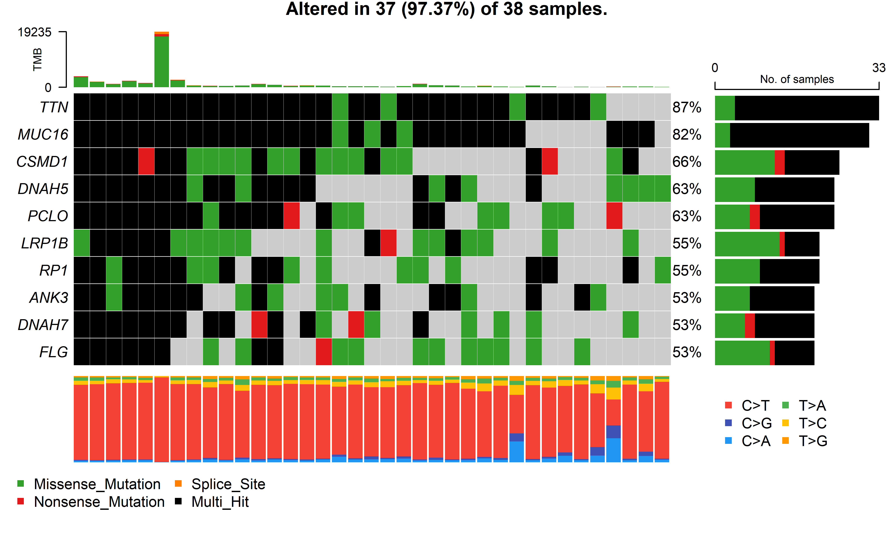
###nadeem
files <- as.list(paste0("../data/Immunotherapy/nadeem/",dir("../data/Immunotherapy/nadeem/")))
nadeem_maf <- merge_mafs(files)
#> Merging 66 MAF files
#> -Validating
#> --Removed 2 duplicated variants
#> -Silent variants: 84077
#> -Summarizing
#> --Possible FLAGS among top ten genes:
#> TTN
#> MUC16
#> OBSCN
#> -Processing clinical data
#> --Missing clinical data
#> -Finished in 3.720s elapsed (2.930s cpu)
oncoplot(maf = nadeem_maf,top=10,draw_titv = TRUE)